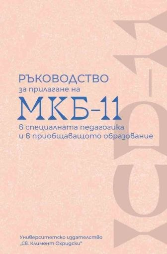
Заглавие 01
Ръководство за прилагане на МКБ-11 в специалната педагогика и в приобщаващото образование
Практически ориентирано заглавие за използването на класификационната система МКБ-11 в образователен контекст.
Към книгата ↗Селекция заглавия в четири тематични раздела. Обзор на заглавията в психологията, психоанализата и психиатрията през 2025/2026 г.
7 заглавия

Практически ориентирано заглавие за използването на класификационната система МКБ-11 в образователен контекст.
Към книгата ↗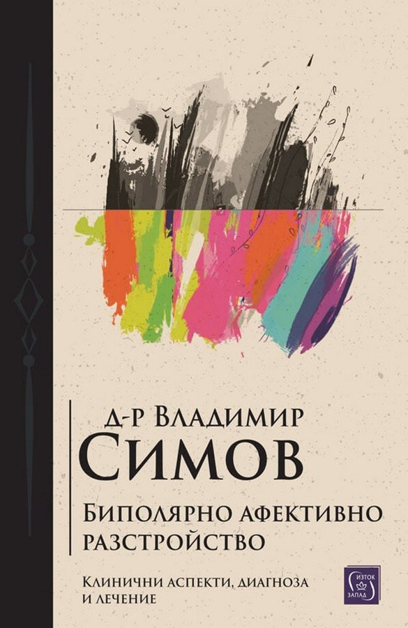
Издание, посветено на биполярното афективно разстройство — тема от ключово значение за клиничната оценка и психичното здраве.
Към книгата ↗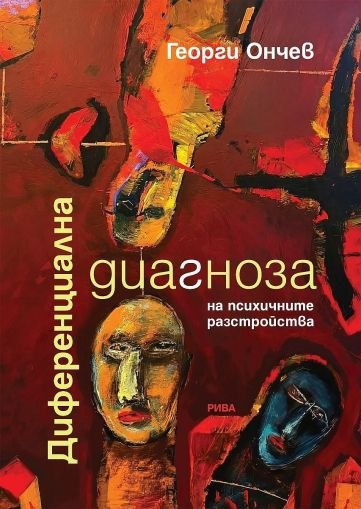
Ново заглавие от проф. Ончев, насочено към разграничаването на психичните разстройства и внимателното клинично мислене.
Към книгата ↗Темата за психопатията (вече наричана антисоциално личностово разстройство).
Към книгата ↗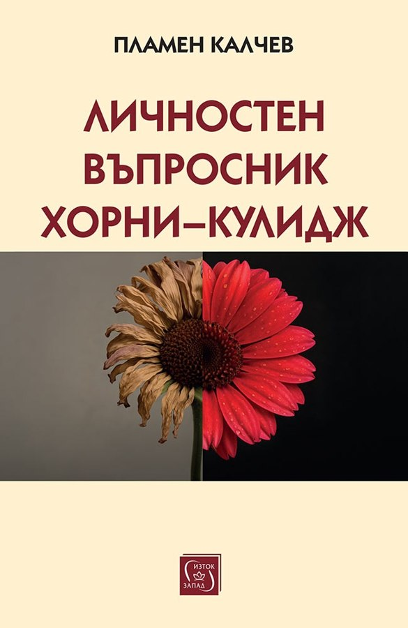
Издание, свързано с личностното оценяване и с концептуалното наследство на Карен Хорни.
Към книгата ↗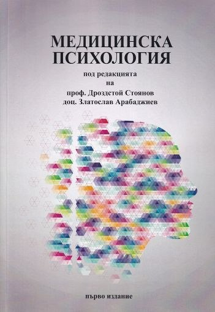
Психология в медицински контекст. Има полезни отправни точки относно клинични техники.
Към книгата ↗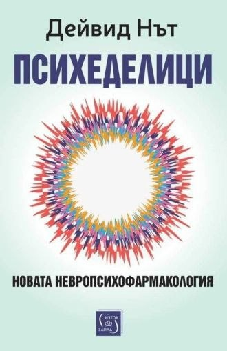
Книга за съвременния интерес към психеделиците и тяхното място в невропсихофармакологичните изследвания. Силно препоръчвам, тъй като в психофармакологията се задава нов клас медикаменти: психеделици.
Към книгата ↗14 заглавия
Жан-Шарл Бушу разглежда тема от психоаналитичния речник, свързана с нарцисизма и деструктивните отношения.
Към книгата ↗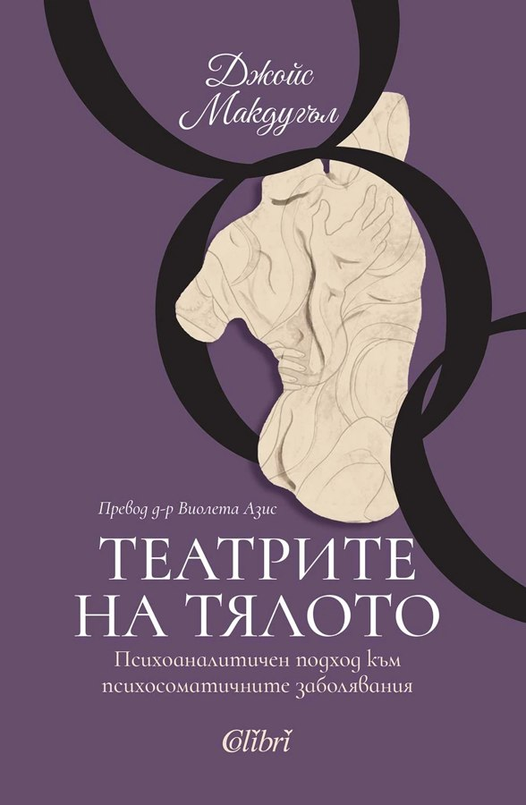
Джойс Макдугъл насочва вниманието към телесното изразяване на психичния живот и психоаналитичното му осмисляне.
Към книгата ↗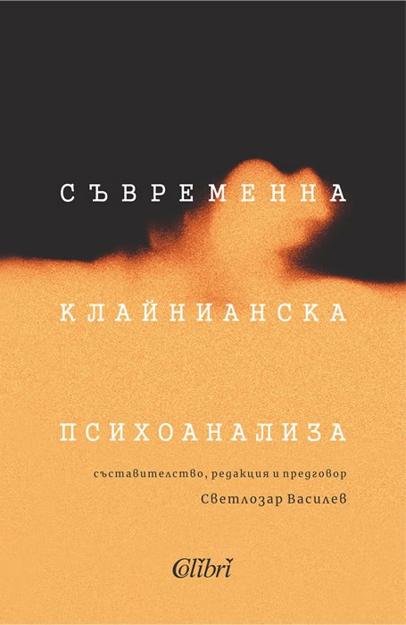
Светлозар Василев представя тематика, свързана с развитието на клайнианската психоаналитична традиция.
Към книгата ↗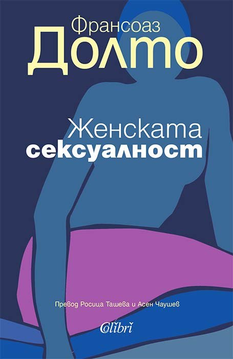
Франсоаз Долто поставя въпросите на женската сексуалност в психоаналитична перспектива.
Към книгата ↗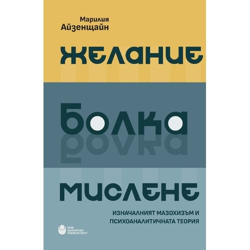
Изследване на връзките между желанието, болката, мисленето и психоаналитичната концепция за мазохизма.
Към книгата ↗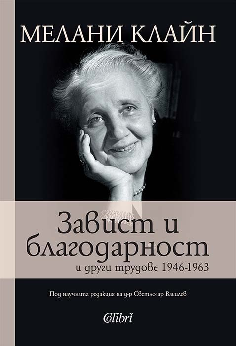
Сборник с текстове на Мелани Клайн, свързани с късния етап от развитието на нейната психоаналитична мисъл. Важен клайниански текст.
Към книгата ↗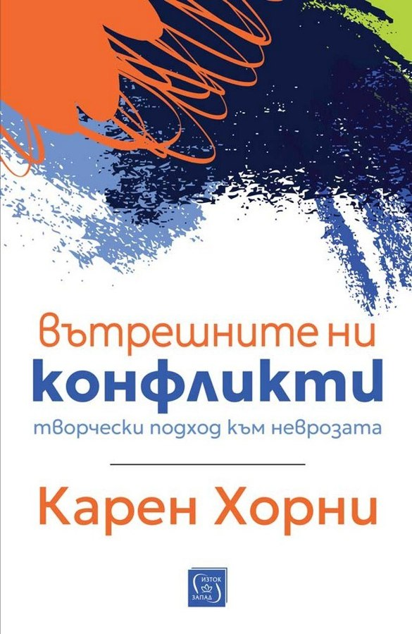
Карен Хорни изследва вътрешните противоречия, които участват в оформянето на невротичните преживявания.
Към книгата ↗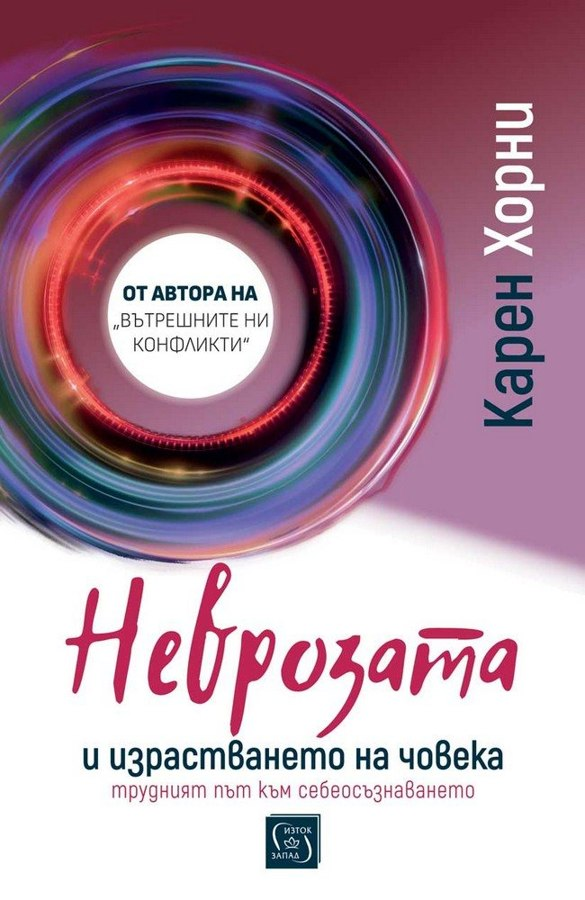
Карен Хорни разглежда напрежението между невротичните тенденции и възможността за личностно развитие. Препоръчвам силно тази книга за работа с невротични пациенти. Изключително проникновено написана.
Към книгата ↗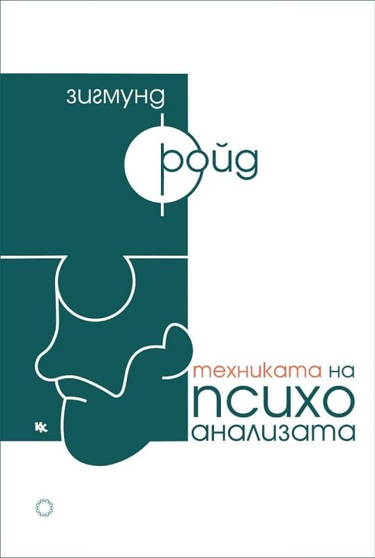
Заглавие, посветено на методите и практическите измерения на психоаналитичната работа. Задължително четиво.
Към книгата ↗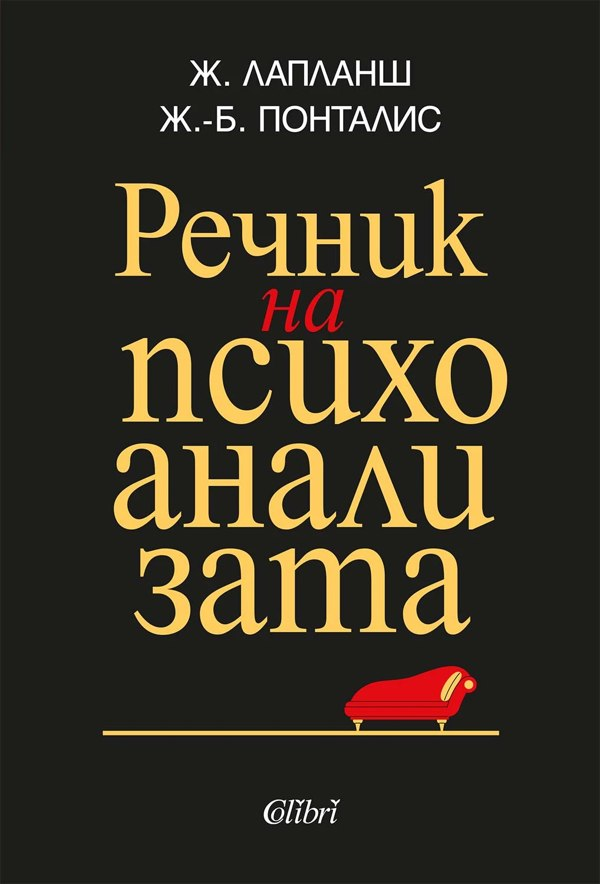
Справочно издание на Жан Лапланш за понятията и терминологията на психоанализата.
Към книгата ↗Книга, която поставя в центъра си темата за майчинството и неговите сложни преживявания.
Към книгата ↗Заглавие, което приканва към размисъл за женското желание и неговото осмисляне.
Към книгата ↗Петър Кралев разглежда алкохолната зависимост през психологическа и психотерапевтична перспектива. Изданието проследява различни подходи към лечението и възстановяването, включително групите за взаимопомощ и неорайхианската психотерапия.
Към книгата ↗Книга на Петър Кралев, посветена на граничността и предизвикателствата в психотерапевтичната работа с хора с бордерлайн характеристики.
Към книгата ↗4 заглавия
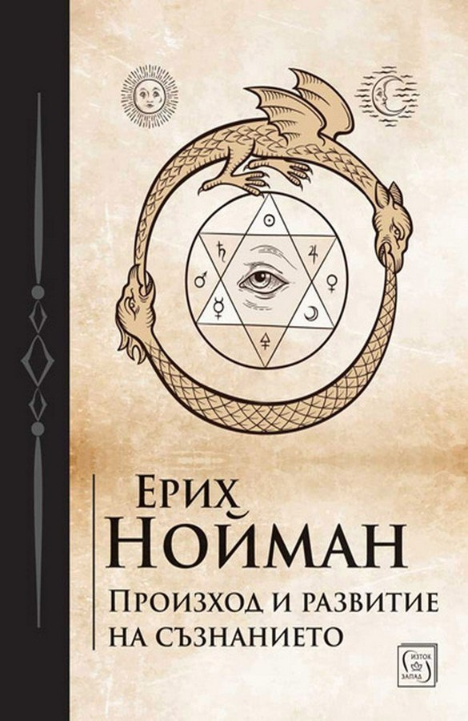
Изследване на възникването и развитието на съзнанието в традицията на аналитичната психология.
Към книгата ↗Лекции от късния период на юнгианската мисъл — възможност за среща с идеи в тяхното устно изложение.
Към книгата ↗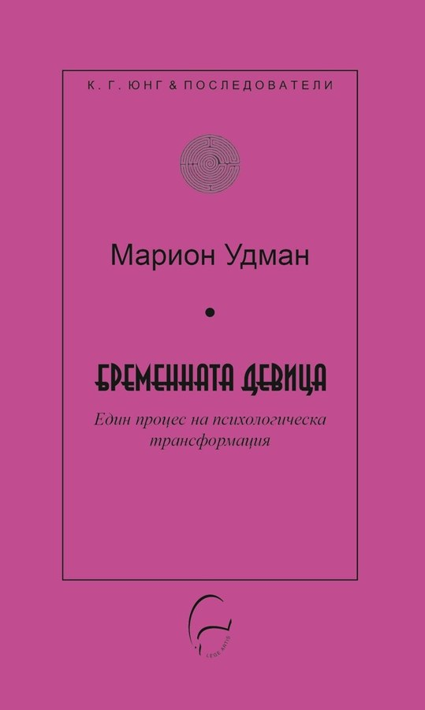
Заглавие от полето на аналитичната психология, което насочва към символния и архетипен прочит.
Към книгата ↗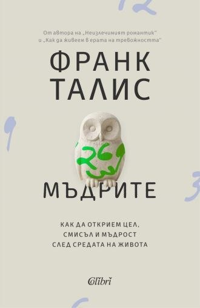
Книга, която допълва селекцията с поглед към мъдростта и психологическите ѝ измерения.
Към книгата ↗3 заглавия
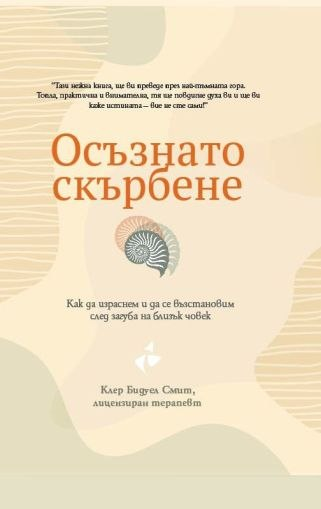
Заглавие за преживяването на загубата и за внимателното отношение към процеса на скърбене.
Към книгата ↗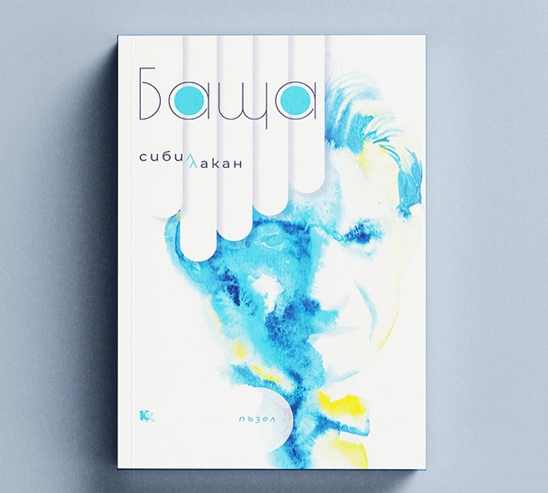
Книга, която поставя темата за бащата в центъра на читателското внимание.
Към книгата ↗Текст, който отправя философско предизвикателство към традиционните представи за желание, субект и психоанализа.
Към книгата ↗